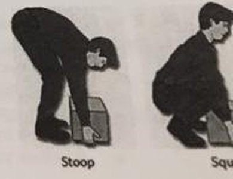
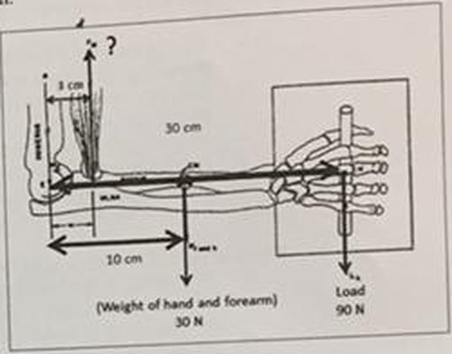
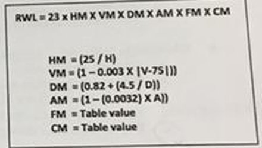
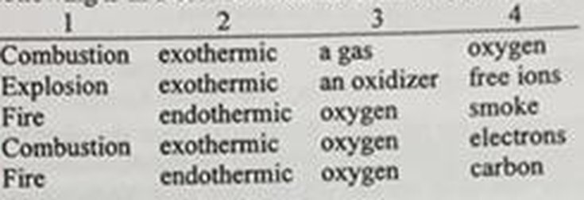
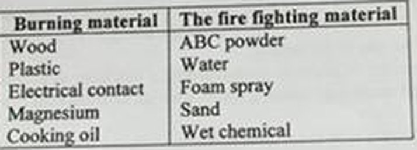

ES411 Occupational Health and Safety I – Final – December 31, 2019 – 25 Questions - 4 points each - 75 Minutes – Assist. Prof. Celal GÜNGÖR
B kitapçığı. Şıklar kâğıtta küçük harfle (a-e); BÜYÜK harfe çevrildi.
Eksik soru yok; kaynak A ve W kopyaları aynı sayfaları gösteriyor.
Q6 şeklinde Squat resmi sağdan kısmen kesik.
Q16 ve Q18 şıkları tablo satırlarıdır.
Bir şıkkı işaretlediğinizde doğru cevap görünür. Seçiminiz bu tarayıcıda saklanır.
0 / 25 cevaplandı
1. What is the difference between psychophysical and physiological manual material handling assessment methods?
Doğru cevap: D · Kâğıtta/ekranda işaretli cevap
2. Which of the following is a false statement?
Doğru cevap: D · Kâğıtta/ekranda işaretli cevap · İnsan vücudunda en yaygın kaldıraç sistemi 3. sınıftır.
3. Which manual material assessment method provides us information about "the percentage of subject that can perform a task?"
Doğru cevap: A · Kâğıtta/ekranda işaretli cevap
4. Which of the following is a false statement in terms of Emergency Action Plan (EPA)?
Doğru cevap: E · Kâğıtta/ekranda işaretli cevap · Sorudaki "EPA" yazımı kâğıttaki gibi bırakıldı.
5. If we want people not to bring any flammable material to our workplace, which of the following signs should we post in front of our entrance?
Doğru cevap: C · Kâğıtta/ekranda işaretli cevap · Yasak işareti: kırmızı daire + çapraz çizgi, siyah piktogram.
6. Which of the following is a true statement?

Doğru cevap: D · Kâğıtta/ekranda işaretli cevap · Şekil (Stoop / Squat) fotoğrafta sağdan kısmen kesik; Squat resmi yarım görünüyor.
7. If the lifting index suggests us that a specific lifting task is not acceptable and we know that the load lifted is 12 kg, what is the recommended weight limit (RWL) for this task?
Doğru cevap: A · Kâğıtta/ekranda işaretli cevap · LI = yük/RWL > 1 ise kabul edilemez; RWL < 12 kg olmalı.
8. Rotating workers to minimize their exposure to excessive noise is an example of an administrative control.
Doğru cevap: A · Kâğıtta/ekranda işaretli cevap
9. Based on the figure given on the right hand side, what is the required force by the biceps muscle to lift the load?

Doğru cevap: D · Kâğıtta/ekranda işaretli cevap · Dirsek etrafında moment: F x 3 = 30 x 10 + 90 x 30 = 3000, F = 1000 N. Öğrenci A şıkkını karalayıp D'yi daire içine almış. Şekil: 3 cm, 30 cm, 10 cm, ön kol ağırlığı 30 N, yük 90 N.
10. If we want people/pedestrians to walk a specific route, which of the following signs should we design?
Doğru cevap: D · Kâğıtta/ekranda işaretli cevap · Zorunluluk işareti: mavi daire, beyaz piktogram.
11. Based on the NIOSH recommended weight limit (RWL) formula, which of the following is a false statement?
Formül
RWL = 23 x HM x VM x DM x AM x FM x CM
HM = (25 / H)
VM = (1 - 0.003 x |V-75|)
DM = (0.82 + (4.5 / D))
AM = (1 - (0.0032) x A))
FM = Table value
CM = Table value

Doğru cevap: C · Kâğıtta/ekranda işaretli cevap · VM(25)=0.85 < VM(50)=0.925; yani 25 cm dikey mesafe 50 cm'den daha iyi değil.
12. A fire of polyurethane (or Styrofoam) cups is classified (in the EU classification system) as: ______.
Doğru cevap: A · Kâğıtta/ekranda işaretli cevap · Katı organik madde yangını (AB sınıflandırmasında Class A).
13. Why is it important to know the different classes of fire?
Doğru cevap: D · Kâğıtta/ekranda işaretli cevap
14. If we design a signboard for a ferry to let people know that "Life jackets are under the seat," which of the following signs should we design?
Doğru cevap: B · Kâğıtta/ekranda işaretli cevap · Acil durum/güvenli durum işareti: yeşil dikdörtgen, beyaz piktogram.
15. If there is a fire and you want to stop it, which of the following is not one of your options?
Doğru cevap: A · Kâğıtta/ekranda işaretli cevap · Fotoğrafta A şıkkı daire içinde, B şıkkında da kısmen kırmızı işaret görünüyor; A esas alındı.
16. __1__ is an __2__, self-sustaining reaction between a substance and __3__ to release heat, light, noise, and __4__. Which of the following is in a correct order to define the sentence above?
1
2
3
4
A
Combustion
exothermic
a gas
oxygen
B
Explosion
exothermic
an oxidizer
free ions
C
Fire
endothermic
oxygen
smoke
D
Combustion
exothermic
oxygen
electrons
E
Fire
endothermic
oxygen
carbon

Doğru cevap: D · Kâğıtta/ekranda işaretli cevap · Şıklar tablo satırlarıdır. Yanma = ekzotermik, oksijenle reaksiyon; D tek uyumlu satır.
17. If you design a fire alarm system to alert people when there is a fire, which type of safety sign(s) should you use?
Doğru cevap: A · Kâğıtta/ekranda işaretli cevap
18. Which of the following is not a good match?
Burning material
The fire fighting material
Wood
ABC powder
Plastic
Water
Electrical contact
Foam spray
Magnesium
Sand
Cooking oil
Wet chemical

Doğru cevap: C · Kâğıtta/ekranda işaretli cevap · Şıklar tablo satırlarıdır (A-E sırasıyla). Elektrik yangınında köpük (iletken) uygun değil. Kırpımın sol kenarında işaret dairesinin küçük bir parçası görünebilir.
19. When there is an emergency we should follow the exit route to gather at the assembly point. We often use hallways (corridor) to go to the assembly point. How do we call "the hallway" in safety?
Doğru cevap: B · İşaretli cevapla çelişiyor, gözden geçirin · kâğıtta A işaretli · Çıkış yolunun koridor kısmı 'exit access' olarak adlandırılır; öğrenci 'The exit' işaretlemiş.
20. Which of the following is a false statement?
Doğru cevap: D · Kâğıtta/ekranda işaretli cevap · Etkin biçimde korunmuşsa yüksek tehlikeli alana doğru geçişe izin verilir; bu yüzden D yanlış ifade.
21. Which of the following is a false statement?
Doğru cevap: A · Kâğıtta/ekranda işaretli cevap · Uçaklarda güvenlik faktörü köprülere göre düşüktür.
22. A natural gas detector in your home can detect if there is any propane gas leak. It will alert you if there is any gas leak. So, it is an example for ______.
Doğru cevap: C · Kâğıtta/ekranda işaretli cevap · emin değiliz · Ders içeriğine bağlı; Fail-active da savunulabilir. Öğrenci işareti (C) esas alındı.
23. Which of the following is an example for an unsafe condition?
Doğru cevap: D · Kâğıtta/ekranda işaretli cevap · Diğerleri güvensiz davranış.
24. Ayse comes very tired to her job every Wednesday since she plays tennis on Tuesday evenings. In her workplace, a janitor cleans floors every morning. If someone does not wear non-slip work shoes, there is a high possibility that he or she can slip and fall. Last Wednesday morning, Ayse came to the factory and did not want to wear non-slip work shoes since they are uncomfortable. None of the supervisors realized that she did not wear her work shoes. When she stepped on the wet floor, she felt down and injured her head. Which of the following theory/model can explain this accident?
Doğru cevap: B · Kâğıtta/ekranda işaretli cevap · Birden çok savunma katmanının (denetim, ayakkabı) aynı anda delinmesi.
25. Which of the following is not an example for Murphy's Law?